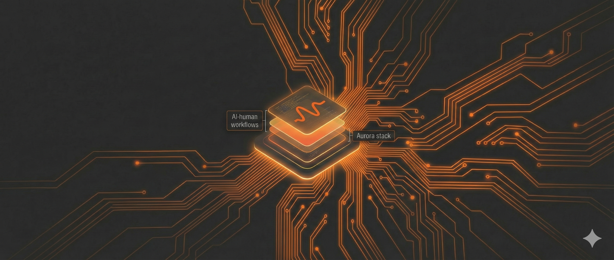

Deterministic enforcement at the execution boundary.
Waveframe Guard prevents unsafe AI and automated actions from reaching production systems. Policies are compiled into contracts, proposals are normalized, and CRI-CORE decides allowed or blocked before execution.
Human policy becomes an execution decision.
The memorable part is small by design: turn governed intent into deterministic authority, bind every proposed action to that authority, then stop anything that fails.
Most AI governance arrives too late.
Logs, dashboards, and prompt instructions can be useful, but they do not reliably stop a bad action at the moment it is about to execute.
- Monitor after execution
- Rely on prompts
- Depend on model behavior
- Cannot prevent execution
Two lines to govern execution.
Install the SDK, bind a published contract, and wrap the function that should never run unless governance requirements are satisfied.
Install
pip install waveframe-guardGuard can enforce locally against published contract artifacts generated by the governance workflow.
SDK Example
from pathlib import Path
from waveframe_guard import install_guard, guard
install_guard(
actor={"id": "user-1", "role": "intern"},
contract_path=Path("contracts/finance-policy-1.0.0.contract.json")
)
@guard
def transfer_funds(amount):
return bank.transfer(amount)Local Guard and Cloud have different jobs.
Local enforcement gives developers fast feedback and resilient runtime checks. Cloud provides authority distribution, audit durability, organizational identity, and verification.
Local Guard
SDK- Simulation
- Developer testing
- Local policy evaluation
- Cached contract enforcement
- Blocks invalid function execution
Waveframe Cloud
Authority- Authoritative contract registry
- Immutable audit logs
- Organizational identities
- Durable receipts
- Production governance evidence
A deterministic governance ecosystem.
Each component has a narrow responsibility, so authority can be inspected, replayed, distributed, normalized, evaluated, and audited without relying on model behavior.